# Python ≥3.5 is required
import sys
assert sys.version_info >= (3, 5)
# Scikit-Learn ≥0.20 is required
import sklearn
assert sklearn.__version__ >= "0.20"
# Common imports
import numpy as np
import os
# to make this notebook's output stable across runs
np.random.seed(42)
# To plot pretty figures
%matplotlib inline
import matplotlib as mpl
import matplotlib.pyplot as plt
mpl.rc('axes', labelsize=14)
mpl.rc('xtick', labelsize=12)
mpl.rc('ytick', labelsize=12)
# Where to save the figures
PROJECT_ROOT_DIR = "."
CHAPTER_ID = "dim_reduction"
IMAGES_PATH = os.path.join(PROJECT_ROOT_DIR, "images", CHAPTER_ID)
os.makedirs(IMAGES_PATH, exist_ok=True)
def save_fig(fig_id, tight_layout=True, fig_extension="png", resolution=300):
path = os.path.join(IMAGES_PATH, fig_id + "." + fig_extension)
print("Saving figure", fig_id)
if tight_layout:
plt.tight_layout()
plt.savefig(path, format=fig_extension, dpi=resolution)Chapter 8 – Dimensionality Reduction
This notebook contains all the sample code and solutions to the exercises in chapter 8.
Setup
First, let’s import a few common modules, ensure MatplotLib plots figures inline and prepare a function to save the figures. We also check that Python 3.5 or later is installed (although Python 2.x may work, it is deprecated so we strongly recommend you use Python 3 instead), as well as Scikit-Learn ≥0.20.
PCA
Let’s build a simple 3D dataset:
np.random.seed(4)
m = 60
w1, w2 = 0.1, 0.3
noise = 0.1
angles = np.random.rand(m) * 3 * np.pi / 2 - 0.5
X = np.empty((m, 3))
X[:, 0] = np.cos(angles) + np.sin(angles)/2 + noise * np.random.randn(m) / 2
X[:, 1] = np.sin(angles) * 0.7 + noise * np.random.randn(m) / 2
X[:, 2] = X[:, 0] * w1 + X[:, 1] * w2 + noise * np.random.randn(m)Principal Components
X_centered = X - X.mean(axis=0)
U, s, Vt = np.linalg.svd(X_centered)
c1 = Vt.T[:, 0]
c2 = Vt.T[:, 1]m, n = X.shape
S = np.zeros(X_centered.shape)
S[:n, :n] = np.diag(s)np.allclose(X_centered, U.dot(S).dot(Vt))TrueProjecting Down to d Dimensions
W2 = Vt.T[:, :2]
X2D = X_centered.dot(W2)X2D_using_svd = X2DUsing Scikit-Learn
With Scikit-Learn, PCA is really trivial. It even takes care of mean centering for you:
from sklearn.decomposition import PCA
pca = PCA(n_components=2)
X2D = pca.fit_transform(X)X2D[:5]array([[ 1.26203346, 0.42067648],
[-0.08001485, -0.35272239],
[ 1.17545763, 0.36085729],
[ 0.89305601, -0.30862856],
[ 0.73016287, -0.25404049]])X2D_using_svd[:5]array([[-1.26203346, -0.42067648],
[ 0.08001485, 0.35272239],
[-1.17545763, -0.36085729],
[-0.89305601, 0.30862856],
[-0.73016287, 0.25404049]])Notice that running PCA multiple times on slightly different datasets may result in different results. In general the only difference is that some axes may be flipped. In this example, PCA using Scikit-Learn gives the same projection as the one given by the SVD approach, except both axes are flipped:
np.allclose(X2D, -X2D_using_svd)TrueRecover the 3D points projected on the plane (PCA 2D subspace).
X3D_inv = pca.inverse_transform(X2D)Of course, there was some loss of information during the projection step, so the recovered 3D points are not exactly equal to the original 3D points:
np.allclose(X3D_inv, X)FalseWe can compute the reconstruction error:
np.mean(np.sum(np.square(X3D_inv - X), axis=1))0.01017033779284855The inverse transform in the SVD approach looks like this:
X3D_inv_using_svd = X2D_using_svd.dot(Vt[:2, :])The reconstructions from both methods are not identical because Scikit-Learn’s PCA class automatically takes care of reversing the mean centering, but if we subtract the mean, we get the same reconstruction:
np.allclose(X3D_inv_using_svd, X3D_inv - pca.mean_)TrueThe PCA object gives access to the principal components that it computed:
pca.components_array([[-0.93636116, -0.29854881, -0.18465208],
[ 0.34027485, -0.90119108, -0.2684542 ]])Compare to the first two principal components computed using the SVD method:
Vt[:2]array([[ 0.93636116, 0.29854881, 0.18465208],
[-0.34027485, 0.90119108, 0.2684542 ]])Notice how the axes are flipped.
Explained Variance Ratio
Now let’s look at the explained variance ratio:
pca.explained_variance_ratio_array([0.84248607, 0.14631839])The first dimension explains 84.2% of the variance, while the second explains 14.6%.
By projecting down to 2D, we lost about 1.1% of the variance:
1 - pca.explained_variance_ratio_.sum()0.011195535570688975Here is how to compute the explained variance ratio using the SVD approach (recall that s is the diagonal of the matrix S):
np.square(s) / np.square(s).sum()array([0.84248607, 0.14631839, 0.01119554])Next, let’s generate some nice figures! :)
Code to generate Figure 8–2. A 3D dataset lying close to a 2D subspace:
Utility class to draw 3D arrows (copied from http://stackoverflow.com/questions/11140163)
from matplotlib.patches import FancyArrowPatch
from mpl_toolkits.mplot3d import proj3d
class Arrow3D(FancyArrowPatch):
def __init__(self, xs, ys, zs, *args, **kwargs):
FancyArrowPatch.__init__(self, (0,0), (0,0), *args, **kwargs)
self._verts3d = xs, ys, zs
def draw(self, renderer):
xs3d, ys3d, zs3d = self._verts3d
xs, ys, zs = proj3d.proj_transform(xs3d, ys3d, zs3d, renderer.M)
self.set_positions((xs[0],ys[0]),(xs[1],ys[1]))
FancyArrowPatch.draw(self, renderer)Express the plane as a function of x and y.
axes = [-1.8, 1.8, -1.3, 1.3, -1.0, 1.0]
x1s = np.linspace(axes[0], axes[1], 10)
x2s = np.linspace(axes[2], axes[3], 10)
x1, x2 = np.meshgrid(x1s, x2s)
C = pca.components_
R = C.T.dot(C)
z = (R[0, 2] * x1 + R[1, 2] * x2) / (1 - R[2, 2])Plot the 3D dataset, the plane and the projections on that plane.
from mpl_toolkits.mplot3d import Axes3D
fig = plt.figure(figsize=(6, 3.8))
ax = fig.add_subplot(111, projection='3d')
X3D_above = X[X[:, 2] > X3D_inv[:, 2]]
X3D_below = X[X[:, 2] <= X3D_inv[:, 2]]
ax.plot(X3D_below[:, 0], X3D_below[:, 1], X3D_below[:, 2], "bo", alpha=0.5)
ax.plot_surface(x1, x2, z, alpha=0.2, color="k")
np.linalg.norm(C, axis=0)
ax.add_artist(Arrow3D([0, C[0, 0]],[0, C[0, 1]],[0, C[0, 2]], mutation_scale=15, lw=1, arrowstyle="-|>", color="k"))
ax.add_artist(Arrow3D([0, C[1, 0]],[0, C[1, 1]],[0, C[1, 2]], mutation_scale=15, lw=1, arrowstyle="-|>", color="k"))
ax.plot([0], [0], [0], "k.")
for i in range(m):
if X[i, 2] > X3D_inv[i, 2]:
ax.plot([X[i][0], X3D_inv[i][0]], [X[i][1], X3D_inv[i][1]], [X[i][2], X3D_inv[i][2]], "k-")
else:
ax.plot([X[i][0], X3D_inv[i][0]], [X[i][1], X3D_inv[i][1]], [X[i][2], X3D_inv[i][2]], "k-", color="#505050")
ax.plot(X3D_inv[:, 0], X3D_inv[:, 1], X3D_inv[:, 2], "k+")
ax.plot(X3D_inv[:, 0], X3D_inv[:, 1], X3D_inv[:, 2], "k.")
ax.plot(X3D_above[:, 0], X3D_above[:, 1], X3D_above[:, 2], "bo")
ax.set_xlabel("$x_1$", fontsize=18, labelpad=10)
ax.set_ylabel("$x_2$", fontsize=18, labelpad=10)
ax.set_zlabel("$x_3$", fontsize=18, labelpad=10)
ax.set_xlim(axes[0:2])
ax.set_ylim(axes[2:4])
ax.set_zlim(axes[4:6])
# Note: If you are using Matplotlib 3.0.0, it has a bug and does not
# display 3D graphs properly.
# See https://github.com/matplotlib/matplotlib/issues/12239
# You should upgrade to a later version. If you cannot, then you can
# use the following workaround before displaying each 3D graph:
# for spine in ax.spines.values():
# spine.set_visible(False)
save_fig("dataset_3d_plot")
plt.show()Saving figure dataset_3d_plot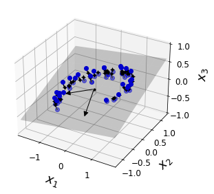
Code to generate Figure 8–3. The new 2D dataset after projection:
fig = plt.figure()
ax = fig.add_subplot(111, aspect='equal')
ax.plot(X2D[:, 0], X2D[:, 1], "k+")
ax.plot(X2D[:, 0], X2D[:, 1], "k.")
ax.plot([0], [0], "ko")
ax.arrow(0, 0, 0, 1, head_width=0.05, length_includes_head=True, head_length=0.1, fc='k', ec='k')
ax.arrow(0, 0, 1, 0, head_width=0.05, length_includes_head=True, head_length=0.1, fc='k', ec='k')
ax.set_xlabel("$z_1$", fontsize=18)
ax.set_ylabel("$z_2$", fontsize=18, rotation=0)
ax.axis([-1.5, 1.3, -1.2, 1.2])
ax.grid(True)
save_fig("dataset_2d_plot")Saving figure dataset_2d_plot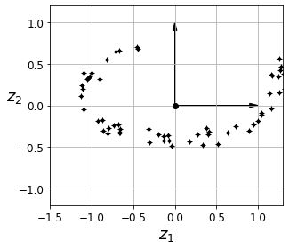
Code to generate Figure 8–4. Swiss roll dataset:
from sklearn.datasets import make_swiss_roll
X, t = make_swiss_roll(n_samples=1000, noise=0.2, random_state=42)axes = [-11.5, 14, -2, 23, -12, 15]
fig = plt.figure(figsize=(6, 5))
ax = fig.add_subplot(111, projection='3d')
ax.scatter(X[:, 0], X[:, 1], X[:, 2], c=t, cmap=plt.cm.hot)
ax.view_init(10, -70)
ax.set_xlabel("$x_1$", fontsize=18)
ax.set_ylabel("$x_2$", fontsize=18)
ax.set_zlabel("$x_3$", fontsize=18)
ax.set_xlim(axes[0:2])
ax.set_ylim(axes[2:4])
ax.set_zlim(axes[4:6])
save_fig("swiss_roll_plot")
plt.show()Saving figure swiss_roll_plot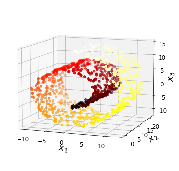
Code to generate Figure 8–5. Squashing by projecting onto a plane (left) versus unrolling the Swiss roll (right):
plt.figure(figsize=(11, 4))
plt.subplot(121)
plt.scatter(X[:, 0], X[:, 1], c=t, cmap=plt.cm.hot)
plt.axis(axes[:4])
plt.xlabel("$x_1$", fontsize=18)
plt.ylabel("$x_2$", fontsize=18, rotation=0)
plt.grid(True)
plt.subplot(122)
plt.scatter(t, X[:, 1], c=t, cmap=plt.cm.hot)
plt.axis([4, 15, axes[2], axes[3]])
plt.xlabel("$z_1$", fontsize=18)
plt.grid(True)
save_fig("squished_swiss_roll_plot")
plt.show()Saving figure squished_swiss_roll_plot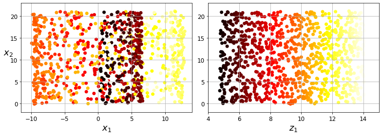
Code to generate Figure 8–6. The decision boundary may not always be simpler with lower dimensions:
from matplotlib import gridspec
axes = [-11.5, 14, -2, 23, -12, 15]
x2s = np.linspace(axes[2], axes[3], 10)
x3s = np.linspace(axes[4], axes[5], 10)
x2, x3 = np.meshgrid(x2s, x3s)
fig = plt.figure(figsize=(6, 5))
ax = plt.subplot(111, projection='3d')
positive_class = X[:, 0] > 5
X_pos = X[positive_class]
X_neg = X[~positive_class]
ax.view_init(10, -70)
ax.plot(X_neg[:, 0], X_neg[:, 1], X_neg[:, 2], "y^")
ax.plot_wireframe(5, x2, x3, alpha=0.5)
ax.plot(X_pos[:, 0], X_pos[:, 1], X_pos[:, 2], "gs")
ax.set_xlabel("$x_1$", fontsize=18)
ax.set_ylabel("$x_2$", fontsize=18)
ax.set_zlabel("$x_3$", fontsize=18)
ax.set_xlim(axes[0:2])
ax.set_ylim(axes[2:4])
ax.set_zlim(axes[4:6])
save_fig("manifold_decision_boundary_plot1")
plt.show()
fig = plt.figure(figsize=(5, 4))
ax = plt.subplot(111)
plt.plot(t[positive_class], X[positive_class, 1], "gs")
plt.plot(t[~positive_class], X[~positive_class, 1], "y^")
plt.axis([4, 15, axes[2], axes[3]])
plt.xlabel("$z_1$", fontsize=18)
plt.ylabel("$z_2$", fontsize=18, rotation=0)
plt.grid(True)
save_fig("manifold_decision_boundary_plot2")
plt.show()
fig = plt.figure(figsize=(6, 5))
ax = plt.subplot(111, projection='3d')
positive_class = 2 * (t[:] - 4) > X[:, 1]
X_pos = X[positive_class]
X_neg = X[~positive_class]
ax.view_init(10, -70)
ax.plot(X_neg[:, 0], X_neg[:, 1], X_neg[:, 2], "y^")
ax.plot(X_pos[:, 0], X_pos[:, 1], X_pos[:, 2], "gs")
ax.set_xlabel("$x_1$", fontsize=18)
ax.set_ylabel("$x_2$", fontsize=18)
ax.set_zlabel("$x_3$", fontsize=18)
ax.set_xlim(axes[0:2])
ax.set_ylim(axes[2:4])
ax.set_zlim(axes[4:6])
save_fig("manifold_decision_boundary_plot3")
plt.show()
fig = plt.figure(figsize=(5, 4))
ax = plt.subplot(111)
plt.plot(t[positive_class], X[positive_class, 1], "gs")
plt.plot(t[~positive_class], X[~positive_class, 1], "y^")
plt.plot([4, 15], [0, 22], "b-", linewidth=2)
plt.axis([4, 15, axes[2], axes[3]])
plt.xlabel("$z_1$", fontsize=18)
plt.ylabel("$z_2$", fontsize=18, rotation=0)
plt.grid(True)
save_fig("manifold_decision_boundary_plot4")
plt.show()Saving figure manifold_decision_boundary_plot1
Saving figure manifold_decision_boundary_plot2
Saving figure manifold_decision_boundary_plot3
Saving figure manifold_decision_boundary_plot4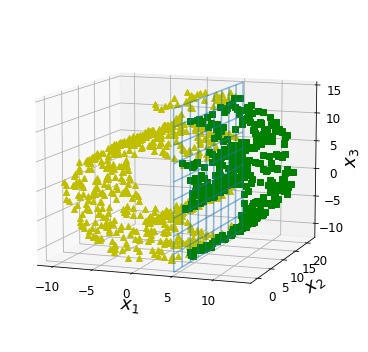
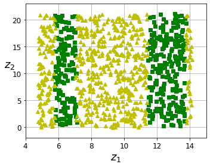
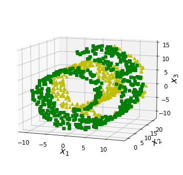
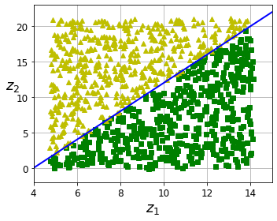
Code to generate Figure 8–7. Selecting the subspace to project on:
angle = np.pi / 5
stretch = 5
m = 200
np.random.seed(3)
X = np.random.randn(m, 2) / 10
X = X.dot(np.array([[stretch, 0],[0, 1]])) # stretch
X = X.dot([[np.cos(angle), np.sin(angle)], [-np.sin(angle), np.cos(angle)]]) # rotate
u1 = np.array([np.cos(angle), np.sin(angle)])
u2 = np.array([np.cos(angle - 2 * np.pi/6), np.sin(angle - 2 * np.pi/6)])
u3 = np.array([np.cos(angle - np.pi/2), np.sin(angle - np.pi/2)])
X_proj1 = X.dot(u1.reshape(-1, 1))
X_proj2 = X.dot(u2.reshape(-1, 1))
X_proj3 = X.dot(u3.reshape(-1, 1))
plt.figure(figsize=(8,4))
plt.subplot2grid((3,2), (0, 0), rowspan=3)
plt.plot([-1.4, 1.4], [-1.4*u1[1]/u1[0], 1.4*u1[1]/u1[0]], "k-", linewidth=1)
plt.plot([-1.4, 1.4], [-1.4*u2[1]/u2[0], 1.4*u2[1]/u2[0]], "k--", linewidth=1)
plt.plot([-1.4, 1.4], [-1.4*u3[1]/u3[0], 1.4*u3[1]/u3[0]], "k:", linewidth=2)
plt.plot(X[:, 0], X[:, 1], "bo", alpha=0.5)
plt.axis([-1.4, 1.4, -1.4, 1.4])
plt.arrow(0, 0, u1[0], u1[1], head_width=0.1, linewidth=5, length_includes_head=True, head_length=0.1, fc='k', ec='k')
plt.arrow(0, 0, u3[0], u3[1], head_width=0.1, linewidth=5, length_includes_head=True, head_length=0.1, fc='k', ec='k')
plt.text(u1[0] + 0.1, u1[1] - 0.05, r"$\mathbf{c_1}$", fontsize=22)
plt.text(u3[0] + 0.1, u3[1], r"$\mathbf{c_2}$", fontsize=22)
plt.xlabel("$x_1$", fontsize=18)
plt.ylabel("$x_2$", fontsize=18, rotation=0)
plt.grid(True)
plt.subplot2grid((3,2), (0, 1))
plt.plot([-2, 2], [0, 0], "k-", linewidth=1)
plt.plot(X_proj1[:, 0], np.zeros(m), "bo", alpha=0.3)
plt.gca().get_yaxis().set_ticks([])
plt.gca().get_xaxis().set_ticklabels([])
plt.axis([-2, 2, -1, 1])
plt.grid(True)
plt.subplot2grid((3,2), (1, 1))
plt.plot([-2, 2], [0, 0], "k--", linewidth=1)
plt.plot(X_proj2[:, 0], np.zeros(m), "bo", alpha=0.3)
plt.gca().get_yaxis().set_ticks([])
plt.gca().get_xaxis().set_ticklabels([])
plt.axis([-2, 2, -1, 1])
plt.grid(True)
plt.subplot2grid((3,2), (2, 1))
plt.plot([-2, 2], [0, 0], "k:", linewidth=2)
plt.plot(X_proj3[:, 0], np.zeros(m), "bo", alpha=0.3)
plt.gca().get_yaxis().set_ticks([])
plt.axis([-2, 2, -1, 1])
plt.xlabel("$z_1$", fontsize=18)
plt.grid(True)
save_fig("pca_best_projection_plot")
plt.show()Saving figure pca_best_projection_plot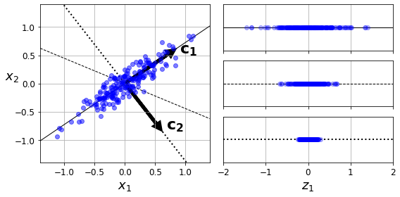
Choosing the Right Number of Dimensions
Warning: since Scikit-Learn 0.24, fetch_openml() returns a Pandas DataFrame by default. To avoid this and keep the same code as in the book, we set as_frame=True.
from sklearn.datasets import fetch_openml
mnist = fetch_openml('mnist_784', version=1, as_frame=False)
mnist.target = mnist.target.astype(np.uint8)from sklearn.model_selection import train_test_split
X = mnist["data"]
y = mnist["target"]
X_train, X_test, y_train, y_test = train_test_split(X, y)pca = PCA()
pca.fit(X_train)
cumsum = np.cumsum(pca.explained_variance_ratio_)
d = np.argmax(cumsum >= 0.95) + 1d154Code to generate Figure 8–8. Explained variance as a function of the number of dimensions:
plt.figure(figsize=(6,4))
plt.plot(cumsum, linewidth=3)
plt.axis([0, 400, 0, 1])
plt.xlabel("Dimensions")
plt.ylabel("Explained Variance")
plt.plot([d, d], [0, 0.95], "k:")
plt.plot([0, d], [0.95, 0.95], "k:")
plt.plot(d, 0.95, "ko")
plt.annotate("Elbow", xy=(65, 0.85), xytext=(70, 0.7),
arrowprops=dict(arrowstyle="->"), fontsize=16)
plt.grid(True)
save_fig("explained_variance_plot")
plt.show()Saving figure explained_variance_plot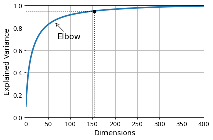
pca = PCA(n_components=0.95)
X_reduced = pca.fit_transform(X_train)pca.n_components_154np.sum(pca.explained_variance_ratio_)0.9504334914295707PCA for Compression
pca = PCA(n_components=154)
X_reduced = pca.fit_transform(X_train)
X_recovered = pca.inverse_transform(X_reduced)Code to generate Figure 8–9. MNIST compression that preserves 95% of the variance:
# EXTRA
def plot_digits(instances, images_per_row=5, **options):
size = 28
images_per_row = min(len(instances), images_per_row)
# This is equivalent to n_rows = ceil(len(instances) / images_per_row):
n_rows = (len(instances) - 1) // images_per_row + 1
# Append empty images to fill the end of the grid, if needed:
n_empty = n_rows * images_per_row - len(instances)
padded_instances = np.concatenate([instances, np.zeros((n_empty, size * size))], axis=0)
# Reshape the array so it's organized as a grid containing 28×28 images:
image_grid = padded_instances.reshape((n_rows, images_per_row, size, size))
# Combine axes 0 and 2 (vertical image grid axis, and vertical image axis),
# and axes 1 and 3 (horizontal axes). We first need to move the axes that we
# want to combine next to each other, using transpose(), and only then we
# can reshape:
big_image = image_grid.transpose(0, 2, 1, 3).reshape(n_rows * size,
images_per_row * size)
# Now that we have a big image, we just need to show it:
plt.imshow(big_image, cmap = mpl.cm.binary, **options)
plt.axis("off")plt.figure(figsize=(7, 4))
plt.subplot(121)
plot_digits(X_train[::2100])
plt.title("Original", fontsize=16)
plt.subplot(122)
plot_digits(X_recovered[::2100])
plt.title("Compressed", fontsize=16)
save_fig("mnist_compression_plot")Saving figure mnist_compression_plot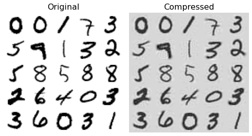
X_reduced_pca = X_reducedRandomized PCA
rnd_pca = PCA(n_components=154, svd_solver="randomized", random_state=42)
X_reduced = rnd_pca.fit_transform(X_train)Incremental PCA
from sklearn.decomposition import IncrementalPCA
n_batches = 100
inc_pca = IncrementalPCA(n_components=154)
for X_batch in np.array_split(X_train, n_batches):
print(".", end="") # not shown in the book
inc_pca.partial_fit(X_batch)
X_reduced = inc_pca.transform(X_train)....................................................................................................X_recovered_inc_pca = inc_pca.inverse_transform(X_reduced)Let’s check that compression still works well:
plt.figure(figsize=(7, 4))
plt.subplot(121)
plot_digits(X_train[::2100])
plt.subplot(122)
plot_digits(X_recovered_inc_pca[::2100])
plt.tight_layout()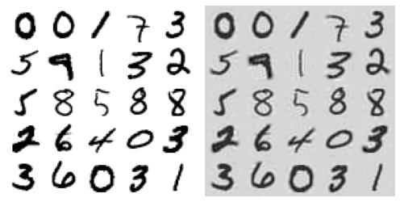
X_reduced_inc_pca = X_reducedLet’s compare the results of transforming MNIST using regular PCA and incremental PCA. First, the means are equal:
np.allclose(pca.mean_, inc_pca.mean_)TrueBut the results are not exactly identical. Incremental PCA gives a very good approximate solution, but it’s not perfect:
np.allclose(X_reduced_pca, X_reduced_inc_pca)FalseUsing memmap():
Let’s create the memmap() structure and copy the MNIST data into it. This would typically be done by a first program:
filename = "my_mnist.data"
m, n = X_train.shape
X_mm = np.memmap(filename, dtype='float32', mode='write', shape=(m, n))
X_mm[:] = X_trainNow deleting the memmap() object will trigger its Python finalizer, which ensures that the data is saved to disk.
del X_mmNext, another program would load the data and use it for training:
X_mm = np.memmap(filename, dtype="float32", mode="readonly", shape=(m, n))
batch_size = m // n_batches
inc_pca = IncrementalPCA(n_components=154, batch_size=batch_size)
inc_pca.fit(X_mm)IncrementalPCA(batch_size=525, n_components=154)Time complexity:
Let’s time regular PCA against Incremental PCA and Randomized PCA, for various number of principal components:
import time
for n_components in (2, 10, 154):
print("n_components =", n_components)
regular_pca = PCA(n_components=n_components, svd_solver="full")
inc_pca = IncrementalPCA(n_components=n_components, batch_size=500)
rnd_pca = PCA(n_components=n_components, random_state=42, svd_solver="randomized")
for name, pca in (("PCA", regular_pca), ("Inc PCA", inc_pca), ("Rnd PCA", rnd_pca)):
t1 = time.time()
pca.fit(X_train)
t2 = time.time()
print(" {}: {:.1f} seconds".format(name, t2 - t1))n_components = 2
PCA: 3.5 seconds
Inc PCA: 9.5 seconds
Rnd PCA: 1.0 seconds
n_components = 10
PCA: 3.3 seconds
Inc PCA: 9.7 seconds
Rnd PCA: 1.5 seconds
n_components = 154
PCA: 3.3 seconds
Inc PCA: 15.6 seconds
Rnd PCA: 3.2 secondsNow let’s compare PCA and Randomized PCA for datasets of different sizes (number of instances):
times_rpca = []
times_pca = []
sizes = [1000, 10000, 20000, 30000, 40000, 50000, 70000, 100000, 200000, 500000]
for n_samples in sizes:
X = np.random.randn(n_samples, 5)
pca = PCA(n_components=2, svd_solver="randomized", random_state=42)
t1 = time.time()
pca.fit(X)
t2 = time.time()
times_rpca.append(t2 - t1)
pca = PCA(n_components=2, svd_solver="full")
t1 = time.time()
pca.fit(X)
t2 = time.time()
times_pca.append(t2 - t1)
plt.plot(sizes, times_rpca, "b-o", label="RPCA")
plt.plot(sizes, times_pca, "r-s", label="PCA")
plt.xlabel("n_samples")
plt.ylabel("Training time")
plt.legend(loc="upper left")
plt.title("PCA and Randomized PCA time complexity ")Text(0.5, 1.0, 'PCA and Randomized PCA time complexity ')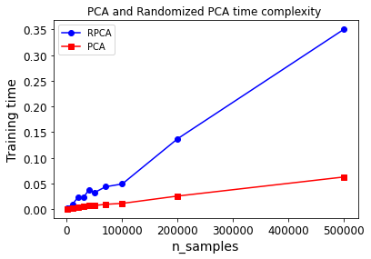
And now let’s compare their performance on datasets of 2,000 instances with various numbers of features:
times_rpca = []
times_pca = []
sizes = [1000, 2000, 3000, 4000, 5000, 6000]
for n_features in sizes:
X = np.random.randn(2000, n_features)
pca = PCA(n_components=2, random_state=42, svd_solver="randomized")
t1 = time.time()
pca.fit(X)
t2 = time.time()
times_rpca.append(t2 - t1)
pca = PCA(n_components=2, svd_solver="full")
t1 = time.time()
pca.fit(X)
t2 = time.time()
times_pca.append(t2 - t1)
plt.plot(sizes, times_rpca, "b-o", label="RPCA")
plt.plot(sizes, times_pca, "r-s", label="PCA")
plt.xlabel("n_features")
plt.ylabel("Training time")
plt.legend(loc="upper left")
plt.title("PCA and Randomized PCA time complexity ")Text(0.5, 1.0, 'PCA and Randomized PCA time complexity ')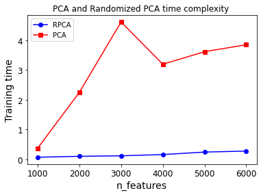
Kernel PCA
X, t = make_swiss_roll(n_samples=1000, noise=0.2, random_state=42)from sklearn.decomposition import KernelPCA
rbf_pca = KernelPCA(n_components = 2, kernel="rbf", gamma=0.04)
X_reduced = rbf_pca.fit_transform(X)Code to generate Figure 8–10. Swiss roll reduced to 2D using kPCA with various kernels:
from sklearn.decomposition import KernelPCA
lin_pca = KernelPCA(n_components = 2, kernel="linear", fit_inverse_transform=True)
rbf_pca = KernelPCA(n_components = 2, kernel="rbf", gamma=0.0433, fit_inverse_transform=True)
sig_pca = KernelPCA(n_components = 2, kernel="sigmoid", gamma=0.001, coef0=1, fit_inverse_transform=True)
y = t > 6.9
plt.figure(figsize=(11, 4))
for subplot, pca, title in ((131, lin_pca, "Linear kernel"), (132, rbf_pca, "RBF kernel, $\gamma=0.04$"), (133, sig_pca, "Sigmoid kernel, $\gamma=10^{-3}, r=1$")):
X_reduced = pca.fit_transform(X)
if subplot == 132:
X_reduced_rbf = X_reduced
plt.subplot(subplot)
#plt.plot(X_reduced[y, 0], X_reduced[y, 1], "gs")
#plt.plot(X_reduced[~y, 0], X_reduced[~y, 1], "y^")
plt.title(title, fontsize=14)
plt.scatter(X_reduced[:, 0], X_reduced[:, 1], c=t, cmap=plt.cm.hot)
plt.xlabel("$z_1$", fontsize=18)
if subplot == 131:
plt.ylabel("$z_2$", fontsize=18, rotation=0)
plt.grid(True)
save_fig("kernel_pca_plot")
plt.show()Saving figure kernel_pca_plot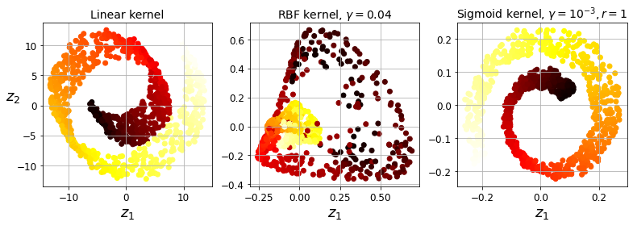
Code to generate Figure 8–11. Kernel PCA and the reconstruction pre-image error:
plt.figure(figsize=(6, 5))
X_inverse = rbf_pca.inverse_transform(X_reduced_rbf)
ax = plt.subplot(111, projection='3d')
ax.view_init(10, -70)
ax.scatter(X_inverse[:, 0], X_inverse[:, 1], X_inverse[:, 2], c=t, cmap=plt.cm.hot, marker="x")
ax.set_xlabel("")
ax.set_ylabel("")
ax.set_zlabel("")
ax.set_xticklabels([])
ax.set_yticklabels([])
ax.set_zticklabels([])
save_fig("preimage_plot", tight_layout=False)
plt.show()Saving figure preimage_plot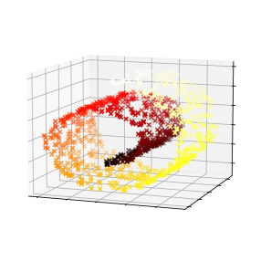
X_reduced = rbf_pca.fit_transform(X)
plt.figure(figsize=(11, 4))
plt.subplot(132)
plt.scatter(X_reduced[:, 0], X_reduced[:, 1], c=t, cmap=plt.cm.hot, marker="x")
plt.xlabel("$z_1$", fontsize=18)
plt.ylabel("$z_2$", fontsize=18, rotation=0)
plt.grid(True)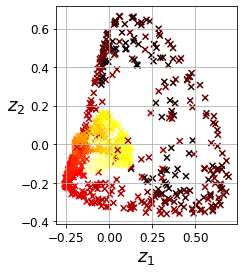
Selecting a Kernel and Tuning Hyperparameters
from sklearn.model_selection import GridSearchCV
from sklearn.linear_model import LogisticRegression
from sklearn.pipeline import Pipeline
clf = Pipeline([
("kpca", KernelPCA(n_components=2)),
("log_reg", LogisticRegression(solver="lbfgs"))
])
param_grid = [{
"kpca__gamma": np.linspace(0.03, 0.05, 10),
"kpca__kernel": ["rbf", "sigmoid"]
}]
grid_search = GridSearchCV(clf, param_grid, cv=3)
grid_search.fit(X, y)GridSearchCV(cv=3,
estimator=Pipeline(steps=[('kpca', KernelPCA(n_components=2)),
('log_reg', LogisticRegression())]),
param_grid=[{'kpca__gamma': array([0.03 , 0.03222222, 0.03444444, 0.03666667, 0.03888889,
0.04111111, 0.04333333, 0.04555556, 0.04777778, 0.05 ]),
'kpca__kernel': ['rbf', 'sigmoid']}])print(grid_search.best_params_){'kpca__gamma': 0.043333333333333335, 'kpca__kernel': 'rbf'}rbf_pca = KernelPCA(n_components = 2, kernel="rbf", gamma=0.0433,
fit_inverse_transform=True)
X_reduced = rbf_pca.fit_transform(X)
X_preimage = rbf_pca.inverse_transform(X_reduced)from sklearn.metrics import mean_squared_error
mean_squared_error(X, X_preimage)1.4326103121600706e-26LLE
X, t = make_swiss_roll(n_samples=1000, noise=0.2, random_state=41)from sklearn.manifold import LocallyLinearEmbedding
lle = LocallyLinearEmbedding(n_components=2, n_neighbors=10, random_state=42)
X_reduced = lle.fit_transform(X)Code to generate Figure 8–12. Unrolled Swiss roll using LLE:
plt.title("Unrolled swiss roll using LLE", fontsize=14)
plt.scatter(X_reduced[:, 0], X_reduced[:, 1], c=t, cmap=plt.cm.hot)
plt.xlabel("$z_1$", fontsize=18)
plt.ylabel("$z_2$", fontsize=18)
plt.axis([-0.065, 0.055, -0.1, 0.12])
plt.grid(True)
save_fig("lle_unrolling_plot")
plt.show()Saving figure lle_unrolling_plot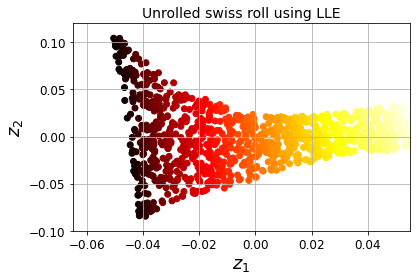
Other Dimensionality Reduction Techniques
from sklearn.manifold import MDS
mds = MDS(n_components=2, random_state=42)
X_reduced_mds = mds.fit_transform(X)from sklearn.manifold import Isomap
isomap = Isomap(n_components=2)
X_reduced_isomap = isomap.fit_transform(X)from sklearn.manifold import TSNE
tsne = TSNE(n_components=2, random_state=42)
X_reduced_tsne = tsne.fit_transform(X)from sklearn.discriminant_analysis import LinearDiscriminantAnalysis
lda = LinearDiscriminantAnalysis(n_components=2)
X_mnist = mnist["data"]
y_mnist = mnist["target"]
lda.fit(X_mnist, y_mnist)
X_reduced_lda = lda.transform(X_mnist)Code to generate Figure 8–13. Using various techniques to reduce the Swill roll to 2D:
titles = ["MDS", "Isomap", "t-SNE"]
plt.figure(figsize=(11,4))
for subplot, title, X_reduced in zip((131, 132, 133), titles,
(X_reduced_mds, X_reduced_isomap, X_reduced_tsne)):
plt.subplot(subplot)
plt.title(title, fontsize=14)
plt.scatter(X_reduced[:, 0], X_reduced[:, 1], c=t, cmap=plt.cm.hot)
plt.xlabel("$z_1$", fontsize=18)
if subplot == 131:
plt.ylabel("$z_2$", fontsize=18, rotation=0)
plt.grid(True)
save_fig("other_dim_reduction_plot")
plt.show()Saving figure other_dim_reduction_plot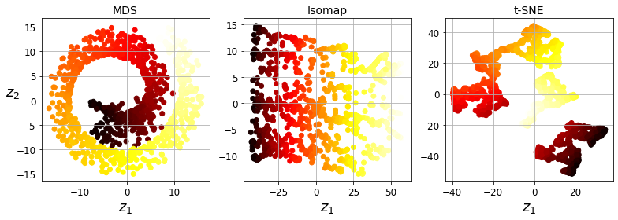
Exercise solutions
1. to 8.
See appendix A.
9.
Exercise: Load the MNIST dataset (introduced in chapter 3) and split it into a training set and a test set (take the first 60,000 instances for training, and the remaining 10,000 for testing).
The MNIST dataset was loaded earlier.
X_train = mnist['data'][:60000]
y_train = mnist['target'][:60000]
X_test = mnist['data'][60000:]
y_test = mnist['target'][60000:]Exercise: Train a Random Forest classifier on the dataset and time how long it takes, then evaluate the resulting model on the test set.
from sklearn.ensemble import RandomForestClassifier
rnd_clf = RandomForestClassifier(n_estimators=100, random_state=42)import time
t0 = time.time()
rnd_clf.fit(X_train, y_train)
t1 = time.time()print("Training took {:.2f}s".format(t1 - t0))Training took 35.27sfrom sklearn.metrics import accuracy_score
y_pred = rnd_clf.predict(X_test)
accuracy_score(y_test, y_pred)0.9705Exercise: Next, use PCA to reduce the dataset’s dimensionality, with an explained variance ratio of 95%.
from sklearn.decomposition import PCA
pca = PCA(n_components=0.95)
X_train_reduced = pca.fit_transform(X_train)Exercise: Train a new Random Forest classifier on the reduced dataset and see how long it takes. Was training much faster?
rnd_clf2 = RandomForestClassifier(n_estimators=100, random_state=42)
t0 = time.time()
rnd_clf2.fit(X_train_reduced, y_train)
t1 = time.time()print("Training took {:.2f}s".format(t1 - t0))Training took 81.03sOh no! Training is actually more than twice slower now! How can that be? Well, as we saw in this chapter, dimensionality reduction does not always lead to faster training time: it depends on the dataset, the model and the training algorithm. See figure 8-6 (the manifold_decision_boundary_plot* plots above). If you try a softmax classifier instead of a random forest classifier, you will find that training time is reduced by a factor of 3 when using PCA. Actually, we will do this in a second, but first let’s check the precision of the new random forest classifier.
Exercise: Next evaluate the classifier on the test set: how does it compare to the previous classifier?
X_test_reduced = pca.transform(X_test)
y_pred = rnd_clf2.predict(X_test_reduced)
accuracy_score(y_test, y_pred)0.9481It is common for performance to drop slightly when reducing dimensionality, because we do lose some useful signal in the process. However, the performance drop is rather severe in this case. So PCA really did not help: it slowed down training and reduced performance. :(
Let’s see if it helps when using softmax regression:
from sklearn.linear_model import LogisticRegression
log_clf = LogisticRegression(multi_class="multinomial", solver="lbfgs", random_state=42)
t0 = time.time()
log_clf.fit(X_train, y_train)
t1 = time.time()print("Training took {:.2f}s".format(t1 - t0))Training took 18.39sy_pred = log_clf.predict(X_test)
accuracy_score(y_test, y_pred)0.9255Okay, so softmax regression takes much longer to train on this dataset than the random forest classifier, plus it performs worse on the test set. But that’s not what we are interested in right now, we want to see how much PCA can help softmax regression. Let’s train the softmax regression model using the reduced dataset:
log_clf2 = LogisticRegression(multi_class="multinomial", solver="lbfgs", random_state=42)
t0 = time.time()
log_clf2.fit(X_train_reduced, y_train)
t1 = time.time()print("Training took {:.2f}s".format(t1 - t0))Training took 6.94sNice! Reducing dimensionality led to over 2× speedup. :) Let’s check the model’s accuracy:
y_pred = log_clf2.predict(X_test_reduced)
accuracy_score(y_test, y_pred)0.9201A very slight drop in performance, which might be a reasonable price to pay for a 2× speedup, depending on the application.
So there you have it: PCA can give you a formidable speedup… but not always!
10.
Exercise: Use t-SNE to reduce the MNIST dataset down to two dimensions and plot the result using Matplotlib. You can use a scatterplot using 10 different colors to represent each image’s target class.
The MNIST dataset was loaded above.
Dimensionality reduction on the full 60,000 images takes a very long time, so let’s only do this on a random subset of 10,000 images:
np.random.seed(42)
m = 10000
idx = np.random.permutation(60000)[:m]
X = mnist['data'][idx]
y = mnist['target'][idx]Now let’s use t-SNE to reduce dimensionality down to 2D so we can plot the dataset:
from sklearn.manifold import TSNE
tsne = TSNE(n_components=2, random_state=42)
X_reduced = tsne.fit_transform(X)Now let’s use Matplotlib’s scatter() function to plot a scatterplot, using a different color for each digit:
plt.figure(figsize=(13,10))
plt.scatter(X_reduced[:, 0], X_reduced[:, 1], c=y, cmap="jet")
plt.axis('off')
plt.colorbar()
plt.show()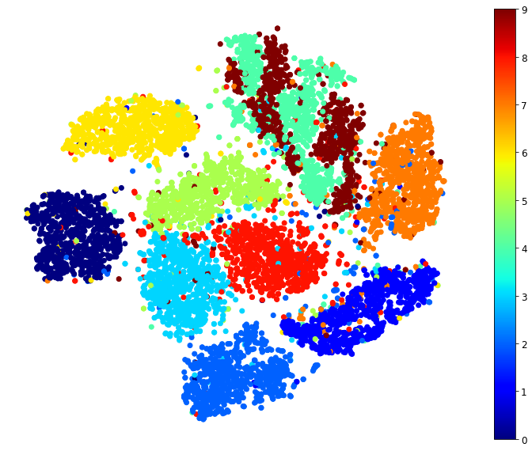
Isn’t this just beautiful? :) This plot tells us which numbers are easily distinguishable from the others (e.g., 0s, 6s, and most 8s are rather well separated clusters), and it also tells us which numbers are often hard to distinguish (e.g., 4s and 9s, 5s and 3s, and so on).
Let’s focus on digits 2, 3 and 5, which seem to overlap a lot.
plt.figure(figsize=(9,9))
cmap = mpl.cm.get_cmap("jet")
for digit in (2, 3, 5):
plt.scatter(X_reduced[y == digit, 0], X_reduced[y == digit, 1], c=[cmap(digit / 9)])
plt.axis('off')
plt.show()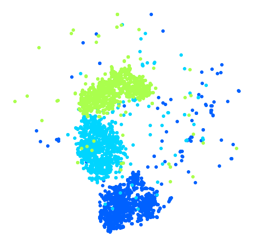
Let’s see if we can produce a nicer image by running t-SNE on these 3 digits:
idx = (y == 2) | (y == 3) | (y == 5)
X_subset = X[idx]
y_subset = y[idx]
tsne_subset = TSNE(n_components=2, random_state=42)
X_subset_reduced = tsne_subset.fit_transform(X_subset)plt.figure(figsize=(9,9))
for digit in (2, 3, 5):
plt.scatter(X_subset_reduced[y_subset == digit, 0], X_subset_reduced[y_subset == digit, 1], c=[cmap(digit / 9)])
plt.axis('off')
plt.show()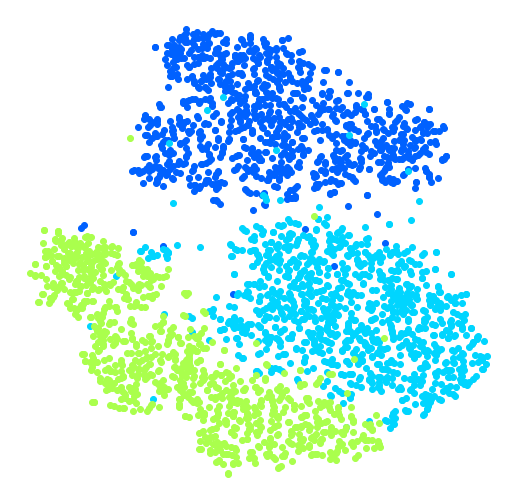
Much better, now the clusters have far less overlap. But some 3s are all over the place. Plus, there are two distinct clusters of 2s, and also two distinct clusters of 5s. It would be nice if we could visualize a few digits from each cluster, to understand why this is the case. Let’s do that now.
Exercise: Alternatively, you can write colored digits at the location of each instance, or even plot scaled-down versions of the digit images themselves (if you plot all digits, the visualization will be too cluttered, so you should either draw a random sample or plot an instance only if no other instance has already been plotted at a close distance). You should get a nice visualization with well-separated clusters of digits.
Let’s create a plot_digits() function that will draw a scatterplot (similar to the above scatterplots) plus write colored digits, with a minimum distance guaranteed between these digits. If the digit images are provided, they are plotted instead. This implementation was inspired from one of Scikit-Learn’s excellent examples (plot_lle_digits, based on a different digit dataset).
from sklearn.preprocessing import MinMaxScaler
from matplotlib.offsetbox import AnnotationBbox, OffsetImage
def plot_digits(X, y, min_distance=0.05, images=None, figsize=(13, 10)):
# Let's scale the input features so that they range from 0 to 1
X_normalized = MinMaxScaler().fit_transform(X)
# Now we create the list of coordinates of the digits plotted so far.
# We pretend that one is already plotted far away at the start, to
# avoid `if` statements in the loop below
neighbors = np.array([[10., 10.]])
# The rest should be self-explanatory
plt.figure(figsize=figsize)
cmap = mpl.cm.get_cmap("jet")
digits = np.unique(y)
for digit in digits:
plt.scatter(X_normalized[y == digit, 0], X_normalized[y == digit, 1], c=[cmap(digit / 9)])
plt.axis("off")
ax = plt.gcf().gca() # get current axes in current figure
for index, image_coord in enumerate(X_normalized):
closest_distance = np.linalg.norm(neighbors - image_coord, axis=1).min()
if closest_distance > min_distance:
neighbors = np.r_[neighbors, [image_coord]]
if images is None:
plt.text(image_coord[0], image_coord[1], str(int(y[index])),
color=cmap(y[index] / 9), fontdict={"weight": "bold", "size": 16})
else:
image = images[index].reshape(28, 28)
imagebox = AnnotationBbox(OffsetImage(image, cmap="binary"), image_coord)
ax.add_artist(imagebox)Let’s try it! First let’s just write colored digits:
plot_digits(X_reduced, y)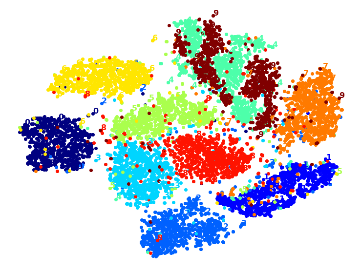
Well that’s okay, but not that beautiful. Let’s try with the digit images:
plot_digits(X_reduced, y, images=X, figsize=(35, 25))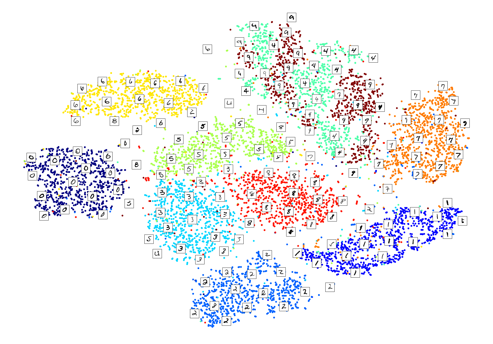
plot_digits(X_subset_reduced, y_subset, images=X_subset, figsize=(22, 22))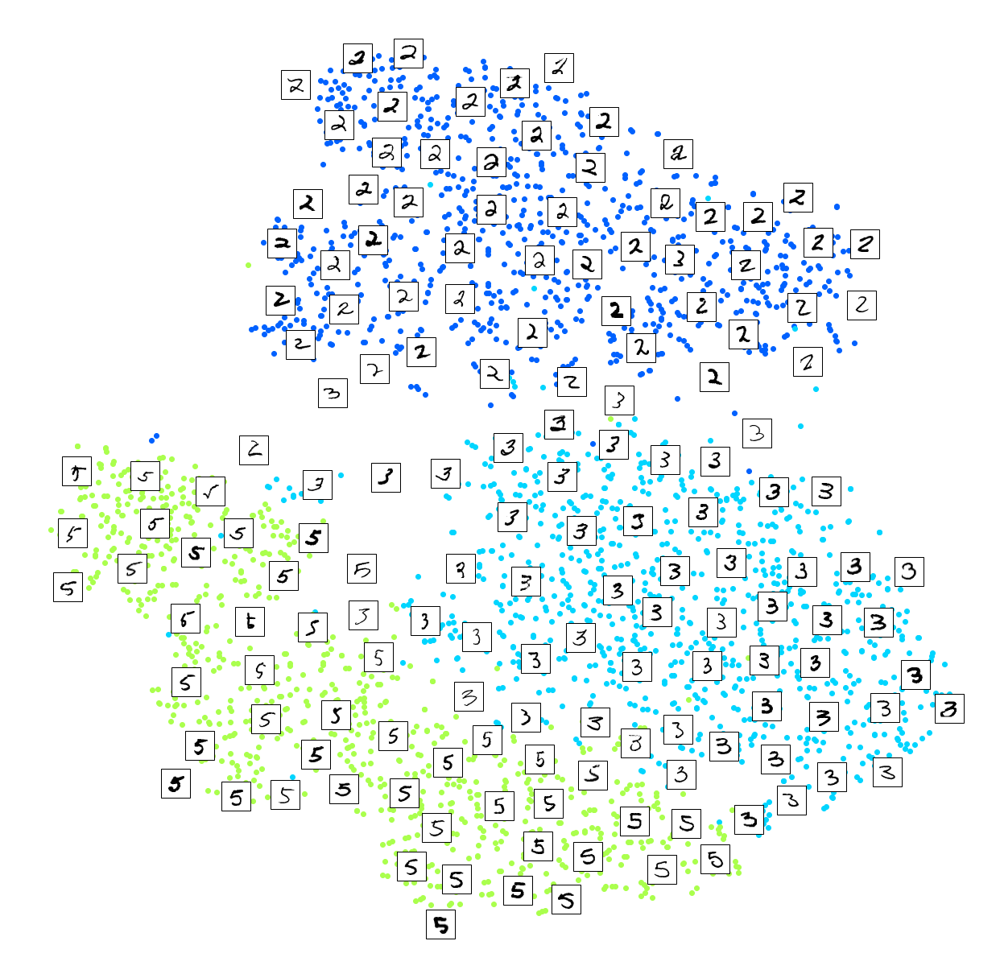
Exercise: Try using other dimensionality reduction algorithms such as PCA, LLE, or MDS and compare the resulting visualizations.
Let’s start with PCA. We will also time how long it takes:
from sklearn.decomposition import PCA
import time
t0 = time.time()
X_pca_reduced = PCA(n_components=2, random_state=42).fit_transform(X)
t1 = time.time()
print("PCA took {:.1f}s.".format(t1 - t0))
plot_digits(X_pca_reduced, y)
plt.show()PCA took 0.2s.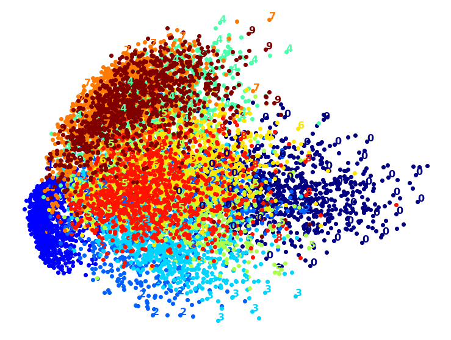
Wow, PCA is blazingly fast! But although we do see a few clusters, there’s way too much overlap. Let’s try LLE:
from sklearn.manifold import LocallyLinearEmbedding
t0 = time.time()
X_lle_reduced = LocallyLinearEmbedding(n_components=2, random_state=42).fit_transform(X)
t1 = time.time()
print("LLE took {:.1f}s.".format(t1 - t0))
plot_digits(X_lle_reduced, y)
plt.show()LLE took 131.9s.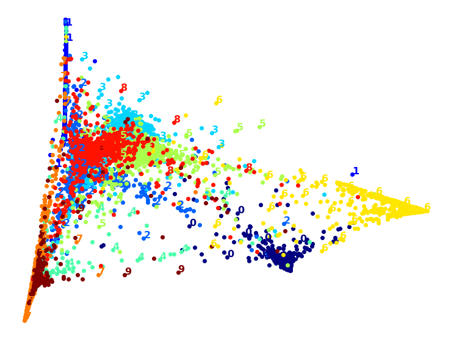
That took a while, and the result does not look too good. Let’s see what happens if we apply PCA first, preserving 95% of the variance:
from sklearn.pipeline import Pipeline
pca_lle = Pipeline([
("pca", PCA(n_components=0.95, random_state=42)),
("lle", LocallyLinearEmbedding(n_components=2, random_state=42)),
])
t0 = time.time()
X_pca_lle_reduced = pca_lle.fit_transform(X)
t1 = time.time()
print("PCA+LLE took {:.1f}s.".format(t1 - t0))
plot_digits(X_pca_lle_reduced, y)
plt.show()PCA+LLE took 34.9s.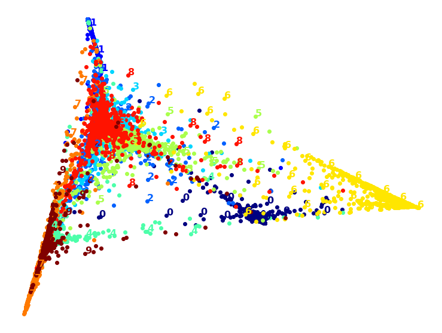
The result is more or less the same, but this time it was almost 4× faster.
Let’s try MDS. It’s much too long if we run it on 10,000 instances, so let’s just try 2,000 for now:
from sklearn.manifold import MDS
m = 2000
t0 = time.time()
X_mds_reduced = MDS(n_components=2, random_state=42).fit_transform(X[:m])
t1 = time.time()
print("MDS took {:.1f}s (on just 2,000 MNIST images instead of 10,000).".format(t1 - t0))
plot_digits(X_mds_reduced, y[:m])
plt.show()MDS took 95.7s (on just 2,000 MNIST images instead of 10,000).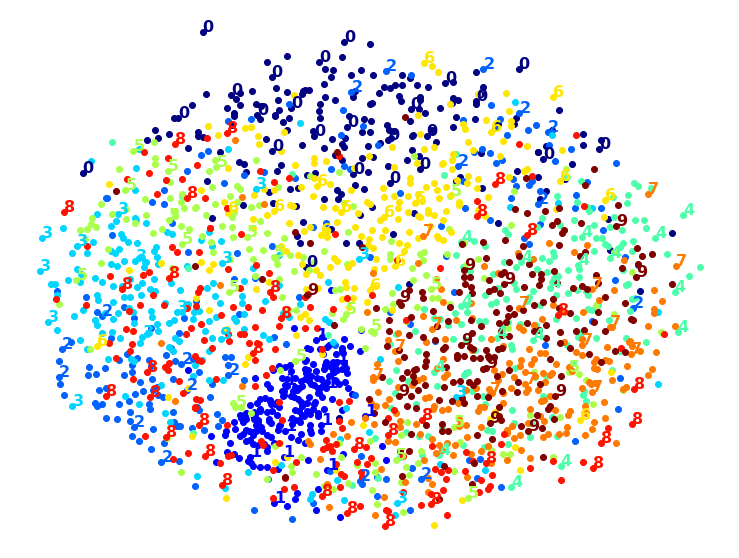
Meh. This does not look great, all clusters overlap too much. Let’s try with PCA first, perhaps it will be faster?
from sklearn.pipeline import Pipeline
pca_mds = Pipeline([
("pca", PCA(n_components=0.95, random_state=42)),
("mds", MDS(n_components=2, random_state=42)),
])
t0 = time.time()
X_pca_mds_reduced = pca_mds.fit_transform(X[:2000])
t1 = time.time()
print("PCA+MDS took {:.1f}s (on 2,000 MNIST images).".format(t1 - t0))
plot_digits(X_pca_mds_reduced, y[:2000])
plt.show()PCA+MDS took 95.2s (on 2,000 MNIST images).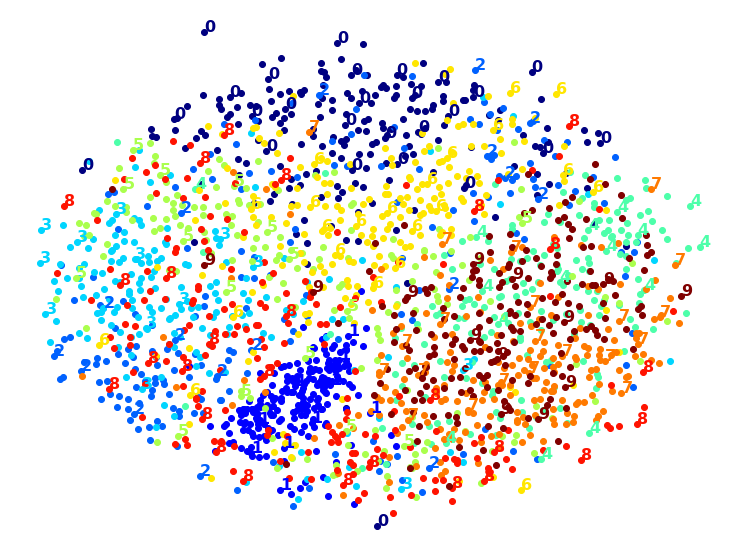
Same result, and no speedup: PCA did not help (or hurt).
Let’s try LDA:
from sklearn.discriminant_analysis import LinearDiscriminantAnalysis
t0 = time.time()
X_lda_reduced = LinearDiscriminantAnalysis(n_components=2).fit_transform(X, y)
t1 = time.time()
print("LDA took {:.1f}s.".format(t1 - t0))
plot_digits(X_lda_reduced, y, figsize=(12,12))
plt.show()LDA took 1.3s.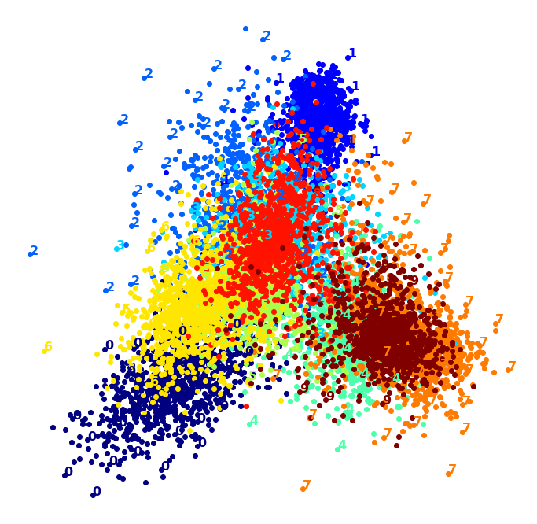
This one is very fast, and it looks nice at first, until you realize that several clusters overlap severely.
Well, it’s pretty clear that t-SNE won this little competition, wouldn’t you agree? We did not time it, so let’s do that now:
from sklearn.manifold import TSNE
t0 = time.time()
X_tsne_reduced = TSNE(n_components=2, random_state=42).fit_transform(X)
t1 = time.time()
print("t-SNE took {:.1f}s.".format(t1 - t0))
plot_digits(X_tsne_reduced, y)
plt.show()t-SNE took 157.3s.
It’s twice slower than LLE, but still much faster than MDS, and the result looks great. Let’s see if a bit of PCA can speed it up:
pca_tsne = Pipeline([
("pca", PCA(n_components=0.95, random_state=42)),
("tsne", TSNE(n_components=2, random_state=42)),
])
t0 = time.time()
X_pca_tsne_reduced = pca_tsne.fit_transform(X)
t1 = time.time()
print("PCA+t-SNE took {:.1f}s.".format(t1 - t0))
plot_digits(X_pca_tsne_reduced, y)
plt.show()PCA+t-SNE took 62.0s.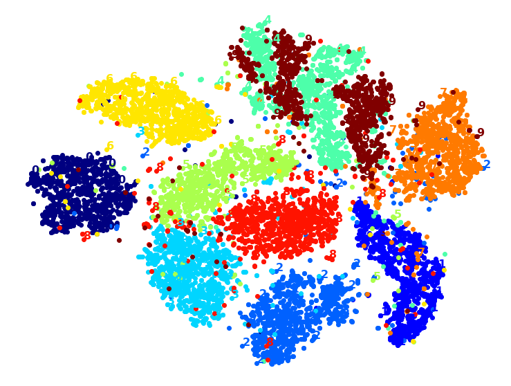
Yes, PCA roughly gave us over 2x speedup, without damaging the result. We have a winner!